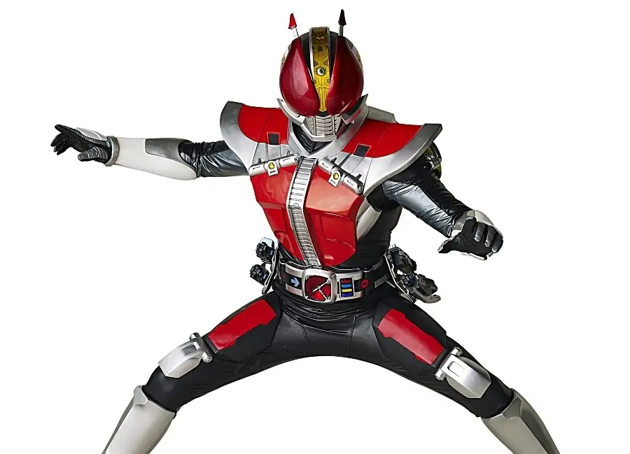
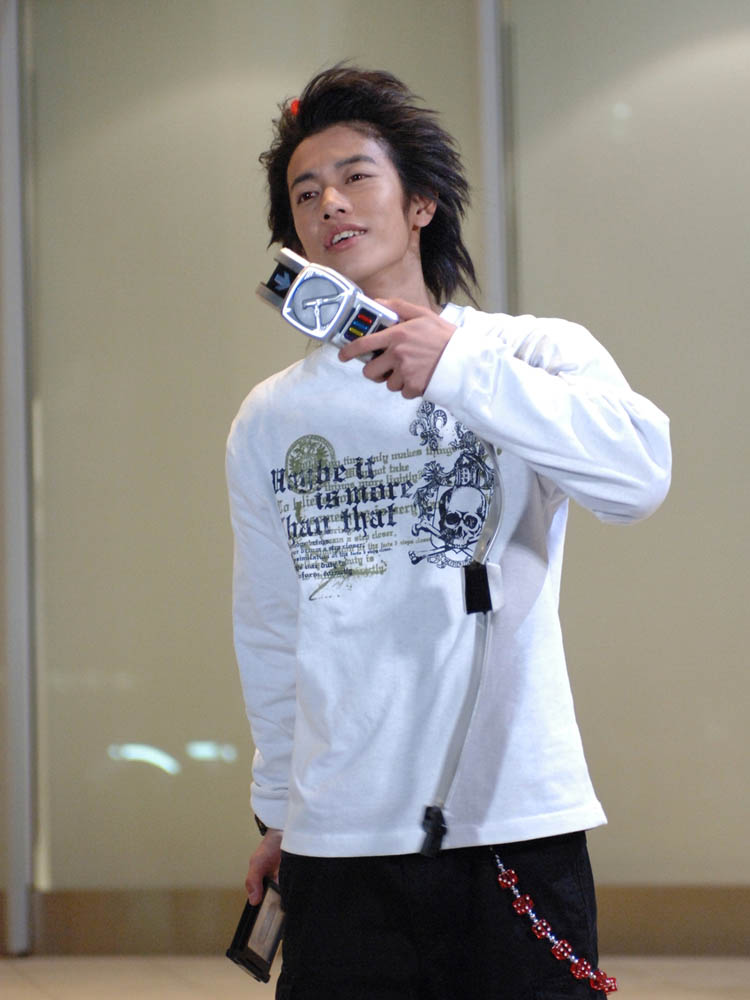
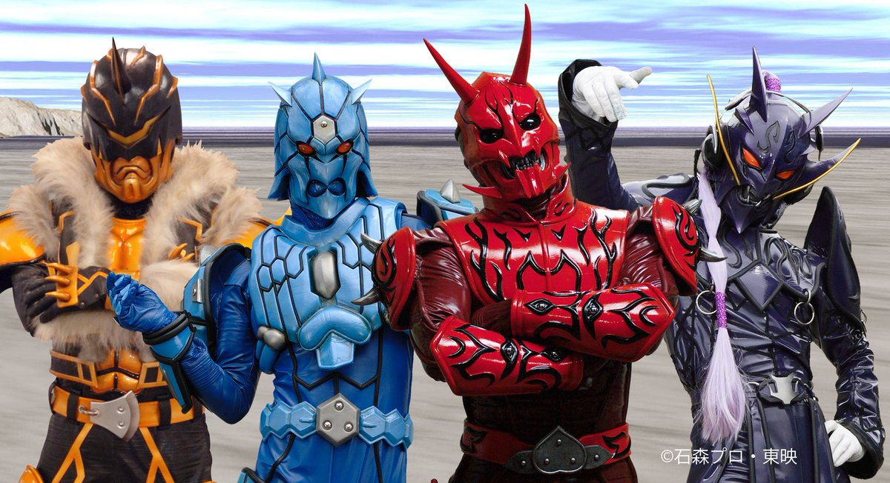
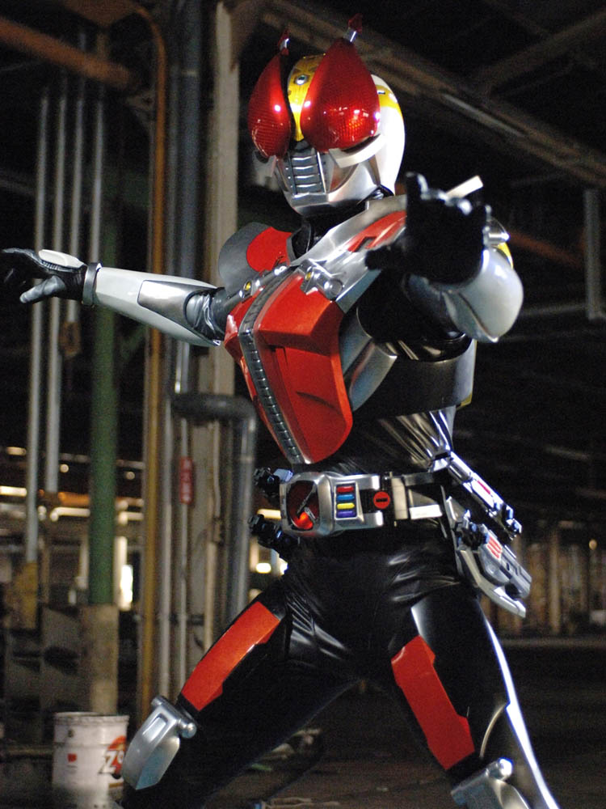
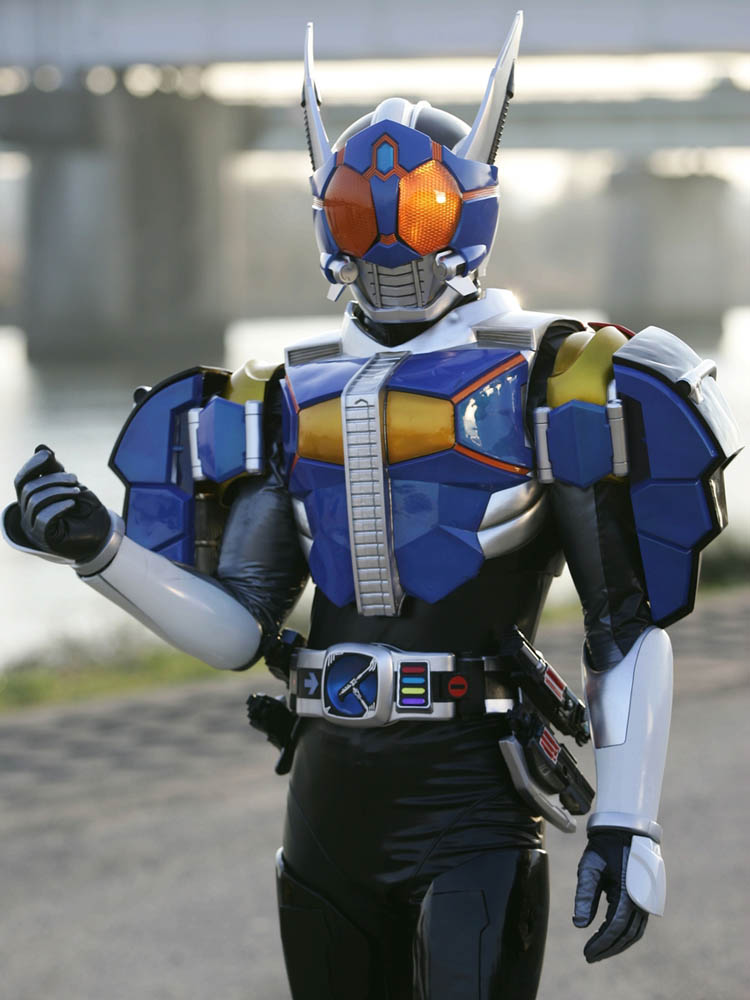
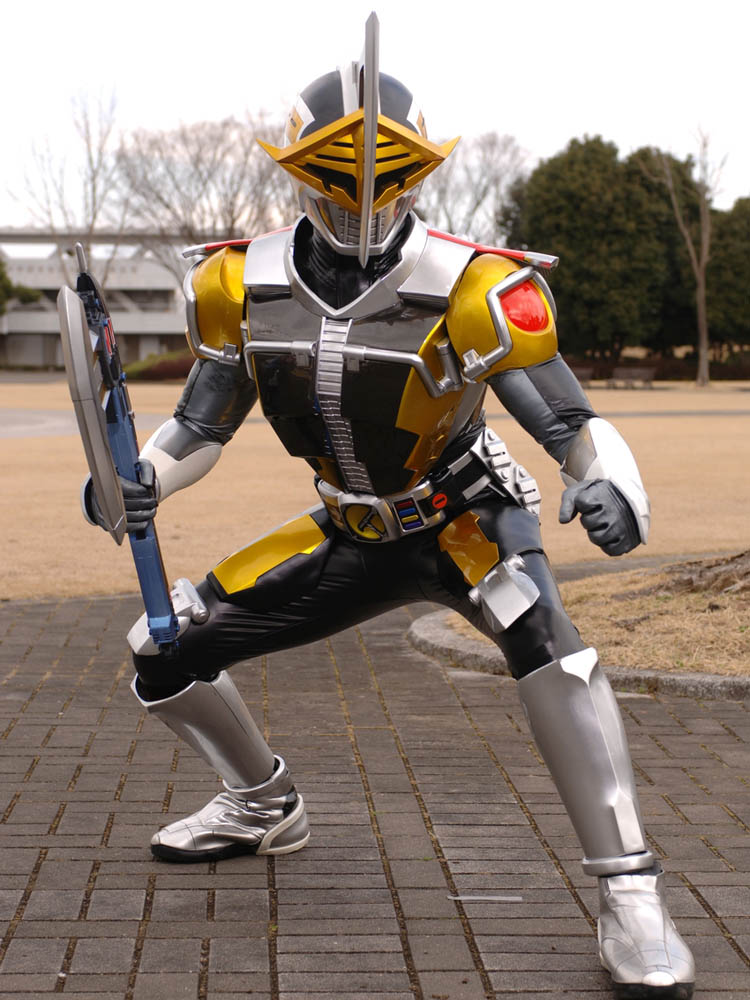
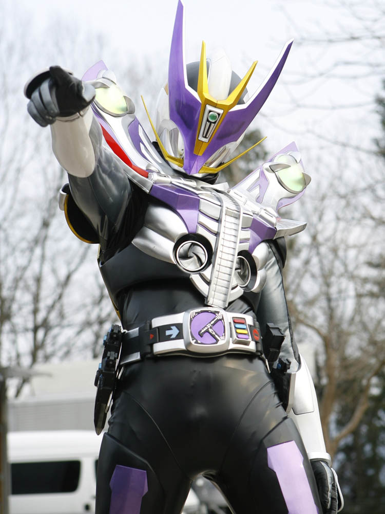
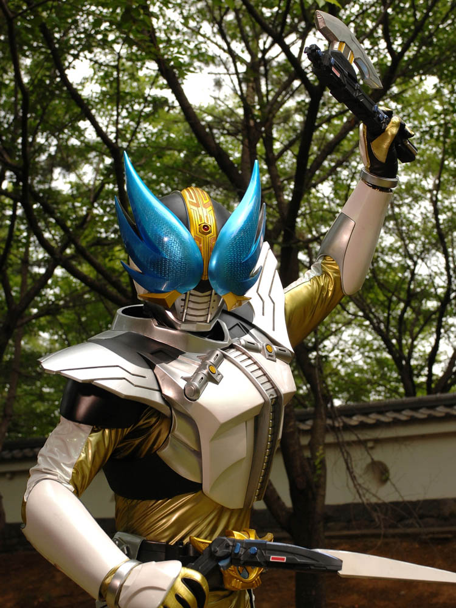
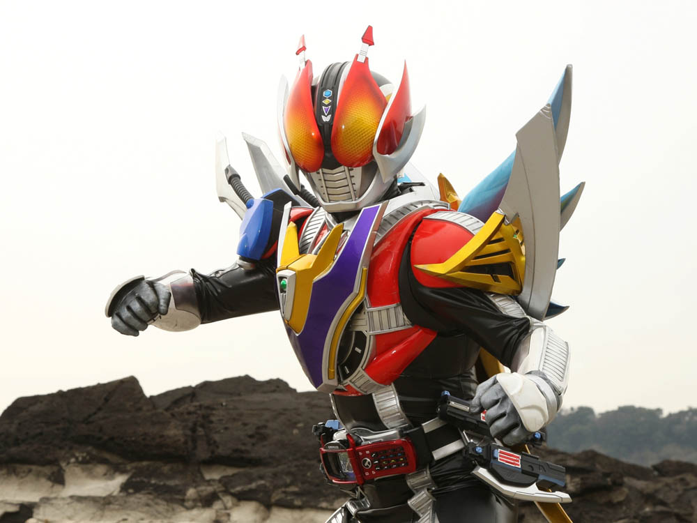
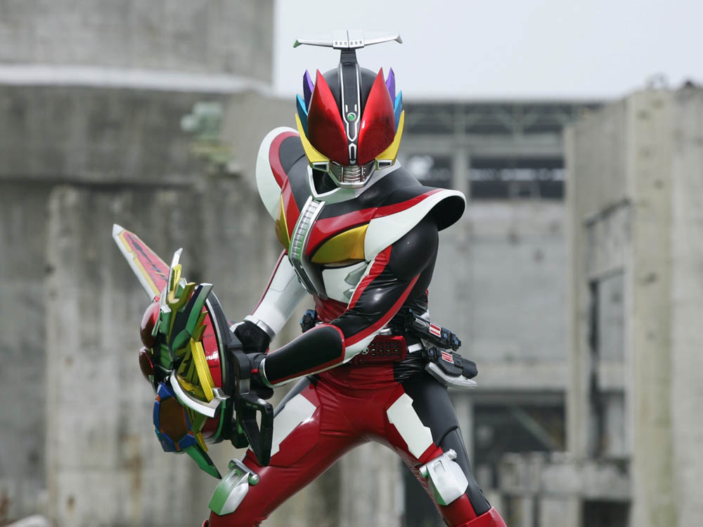

2007年から放送された「仮面ライダー電王」に登場する仮面ライダー
変身者は野上良太郎が「イマジン」という怪人を憑依させ、デンオウベルトを使い、変身を行う。
憑依させたイマジンによって性能が変化する。
身長：190cm 体重：87kg パンチ力：5t キック力：7t ジャンプ力：ひと跳び35m 走力：100mを5.2秒程度

デンオウベルトの憑依させたイマジンに対応するボタンを押し、
ライダーパスを中央のマークにタッチさせることで、変身する。
特異点と呼ばれるものでないと変身することができない。
イマジンは場合にもよるが、変身者に憑依せずとも変身可能。

別世界の未来から来た怪物。未来の人間だという説もある。
そのままでは砂のような形だが、人間と契約し、望みをかなえることで
実体を持つことができる。
良太郎は複数のイマジンと契約しており、
「モモタロス」、「ウラタロス」、「キンタロス」、「リュウタロス」と契約を結んでいる。

ソードフォーム
「モモタロス」が憑依させ、変身
好戦的な性格のため、専用武器「デンガッシャー」ソードモードで接近戦を得意とする。
必殺技でしか飛行する敵に攻撃できなかったり、水中戦ができない欠点はあるが、
ノリが良いため大体の敵は倒せる形態。

ロッドフォーム
「ウラタロス」が憑依させ、変身
「デンガッシャー」ロッドモードでのリーチを生かした
敵を翻弄する戦いが得意。
水中での戦いも可能な有能カメさん。
必殺技がキック。

アックスフォーム
「キンタロス」を憑依させ、変身
「デンガッシャー」アックスモードによる豪快な戦い方を好む。
手数よりも一撃を重視している。
防御力が高く、敵の攻撃も真っ向から受け止める。
負けたイメージがない。

ガンフォーム
「リュウタロス」を憑依させ、変身
「デンガッシャー」ガンモードによる銃撃戦を得意とする。
しかし、狙いをつけずに打っているため命中率は低い。
スペックは最も優れているが、
リュウタロスが精神的に未熟なため、負ける場合が多い。

ウイングフォーム
「ジーク」を憑依させ、変身
「デンガッシャー」ハンドアックスモードとブーメランモードの２つを扱う。
近接戦から遠距離戦どちらにも対応可能。
ジャンプ力、走力はクライマックスフォームを上回っている。
なんか雑に強い。

クライマックスフォーム
ケータロスという電話を使用し、４体のイマジンが同時に憑依することで変身できる。
ベースをモモタロスとし、右をウラタロス、左をキンタロス
胴体兼真ん中をリュウタロスが担当。
わちゃわちゃしており、戦うことが難しいフォームだが、
揃えば、強力な戦闘力を発揮する。

ライナーフォーム
デンカメンソードという４つの仮面がついた剣を用いて変身する。
イマジンを憑依できない関係上、最強フォームでありながら
戦闘力がそこまで高くない。その場しのぎの側面が強い
必殺技は電車切り
他のライダー作品で使った際はよく外す。
仮面ライダー一覧